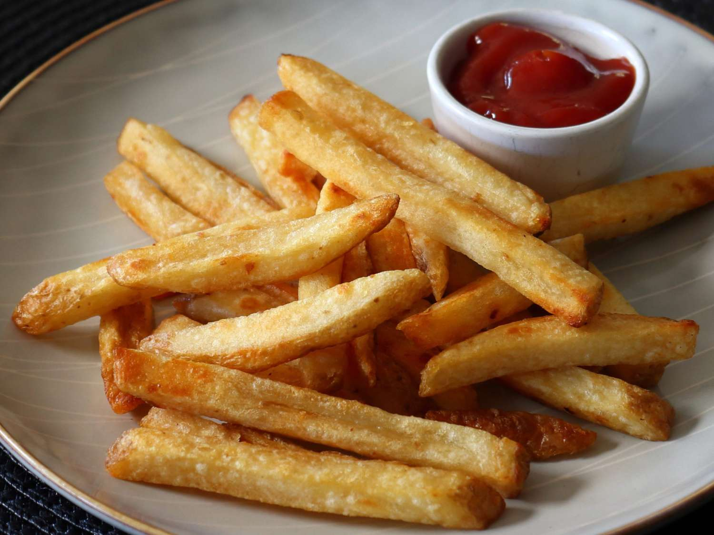

French Fries

Description:
French Fries are another childhood classic and provide you with an amazing hot,salty, and crispy snack or side to a meal.
Ingredients:
- Potatoes
- Oil
- Salt
- Ketchup(optional)
Steps:
- Slice the potatoes 1/2 inch thick.
- Soak them in cold water for at least a hour or overnight
- Rinse them twice with cold water and pat them dry
- Heat oil to 300 degrees.
- Fry in about 6 batches for 5-6 minutes
- Increase heat to 400 degree. Fry in batch until golden brown(about 5 mins)
- Place them on paper towels and sprinkle with salt. Use ketchup as a great dipping sauce.
Return to main page